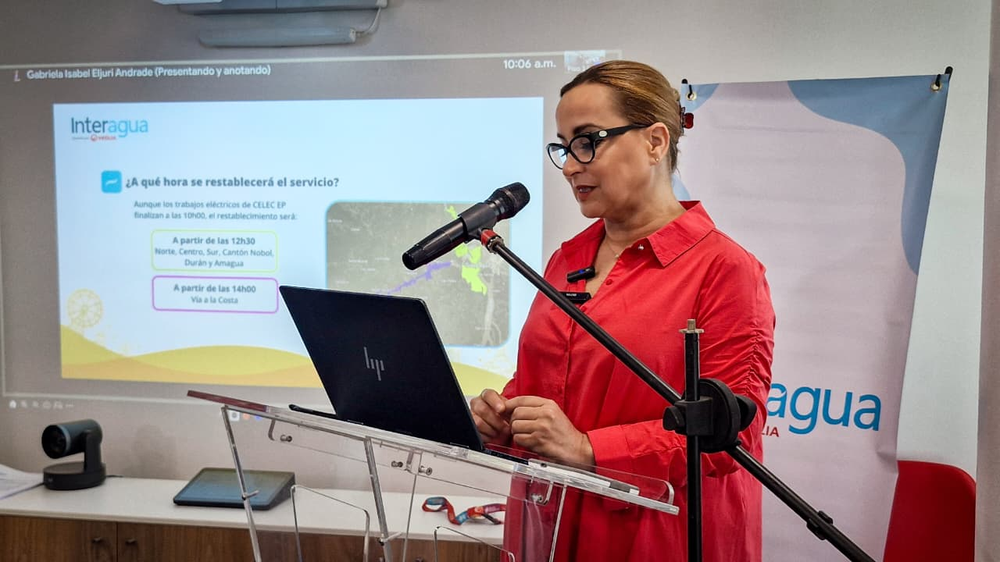

Mantente informado con las noticias más recientes de Ecuador, minuto a minuto. Política, economía, sucesos, deportes, clima y más… ¡Todo en un solo lugar y al instante!
Interagua confirma que este domingo 9 de noviembre no habrá suspensión del servicio de agua potable
Con el anuncio de CELEC - TRANSELECTRIC de la suspensión de sus trabajos de mantenimiento anunciados previamente en el oficio que adjuntamos en la siguiente imagen.
Interagua continuará entregando su servicios de agua potable de manera continua durante el domingo 9 de noviembre.
Estamos a la espera de que CNEL confirme si continuará o no con su planificación para VÍA A LA COSTA que fue informada para la misma fecha.
Mantenimiento de CELEC EP provocará suspensión temporal del servicio de agua en Guayaquil este domingo
Interagua informó que, debido a trabajos eléctricos programados por CELEC EP – Transelectric en la subestación Pascuales, se suspenderá el servicio de agua potable en varios sectores de Guayaquil, Durán, Nobol, Amagua y Vía a la Costa este domingo 9 de noviembre. El mantenimiento se realizará entre las 00h00 y 10h00, y el restablecimiento del servicio será progresivo desde las 12h30.

Ecuador se prepara para presentar su nueva Constitución: un cambio histórico en el marco político y social del país
La nueva Constitución del Ecuador busca modernizar el marco legal del país, fortaleciendo la democracia, la participación ciudadana y la transparencia en la gestión pública. Incluye reformas orientadas a garantizar una mayor equidad social, promover el desarrollo sostenible, proteger los derechos digitales y actualizar las estructuras del Estado para adaptarlas a los retos del siglo XXI.
Ecuador se alista para la consulta popular: los ciudadanos decidirán el rumbo político y las reformas del país
La nueva Constitución del Ecuador busca modernizar el marco legal del país, fortaleciendo la democracia, la participación ciudadana y la transparencia en la gestión pública. Incluye reformas orientadas a garantizar una mayor equidad social, promover el desarrollo sostenible, proteger los derechos digitales y actualizar las estructuras del Estado para adaptarlas a los retos del siglo XXI.
Lo último
Gobierno anuncia nuevas medidas económicas para impulsar el crecimiento nacional
hace 15 minutos
Temperaturas récord registradas en varias ciudades del país durante esta semana
hace 32 minutos
Nueva tecnología promete revolucionar el sector de las telecomunicaciones
hace 1 hora
Deportistas locales clasifican a importantes competencias internacionales